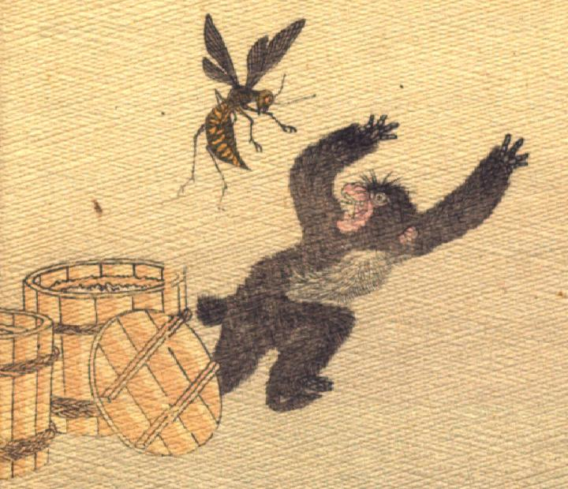

蜂に襲われる猿。桶の蓋が開いており、そこから飛び出したとおぼしき蜂が、猿に襲い掛かっている。猿は両腕をあげ、歯をむき出しにして、逃げようとしている。
著作者：J.Dautremer／出典：親書誌：U426_nichibunken_0106：La bataille du singe et du crabe／日付：2006／資源識別子：U426_nichibunken_0106_0010_0000
Copyright (c)2010- International Research Center for Japanese Studies, Kyoto, Japan. All rights reserved.